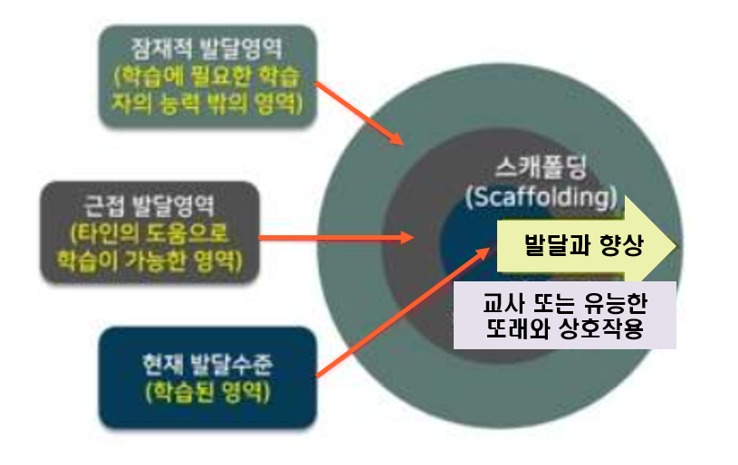
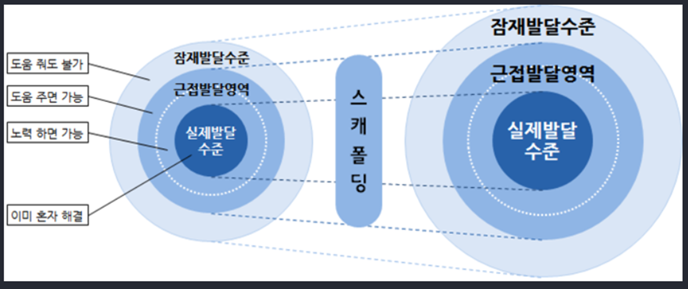

사회문화적 발달이론의 근접잘달 영역
비고츠키(Lev Vygotsky)의 사회문화적 이론(sociocultural cognitive theroy)은 인간은 사회적 맥락 속에서 존재하기 때문에 사회적 맥락을 떠나서는 이해할 수 없다고 하여 발달에서 사회와 문화적인 관계를 강조했다. 특히 아동은 스스로 환경과 상호작용을 통해 습득하는 것이 아니라 부모, 교사, 또래 등과 상호작용하는 것이 인지발달을 촉진한다는 것이다. 이러한 학습과 발달 사이의 관계를 근접발달 영역(Zone of Proximal Development: ZPD)이라고 한다.

아동 혼자서 어떤 과제를 수행할 수 있는 능력 수준
근접발달 영역은 성인이나 유능한 또래로부터 도움을 받아 문제를 해결할 수 있는 잠재적 발달수준(potential developmental level)에서 아동 스스로 문제를 해결할 수 있는 실제적 발달수준(actual developmental level)을 뺀 영역을 의미한다. 아동은 자신보다 유능한 사람들과의 상호작용을 통해 효과적인 방법으로 문제를 해결할 뿐만 아니라 능력이 증가할수록 근접발달 영역은 훨씬 더 넓어진다. 따라서 가장 효과적인 수업이란 근접발달 영역의 상한선의 목표를 높은 수준에 두는 것이다.
성인의 지도, 유능한 또래와의 협동을 통해 문제 해결
아동은 좀 더 어려운 과제를 수행할 때는 새로운 수준의 도움과 지원이 필요하게 되는데, 이때 성인이 도와줄 수 있는 방법으로 실제로 모델이 되어주기, 설명하기, 유도질문하기, 격려하기, 주의를 통제하기 등이 있다. 아동은 해결 과정을 통해서 얻은 경험을 내면화(internalization)하게 된다.
또한 아동 스스로의 힘으로 문제를 해결할 수 있도록 유능한 교사, 부모, 또래가 적절한 안내와 도움을 주는 것을 비계설정(scaffolding)이라고 한다. 비계는 원래 건축학에서 사용하는 용어로 건물을 짓거나 수리할 때 건축재료 등을 손쉽게 운반할 수 있도록 도움을 주는 장치를 말한다. 근접발달영역 내에서 성인이 아동에게 적절한 도움을 주는 것을 수행 수준에 따라 도움을 조절하거나 직접적으로 지시하는 역할을 하게 된다. 근접발달영역은 학생의 인지발달뿐 아니라 교사의 교육활동에 있어서도 매우 중요한 개념이다.
아동이 문제를 해결하도록 비계 설정자는 도움을 주다가 문제를 해결해 나가면 도움을 줄여나가는 방법으로 비계설정을 제거해 나간다. 즉 아동의 능력이 향상 될수록 비계설정 영역은 점차 감소하고 최종적으로 아동 스스로 문제해결을 하는 것은 인지발달에 도움이 되는 것이다.

자신의 사고 과정과 행동을 이끌어 가기 위한 혼잣말
비고츠키(Vygotsky)는 아동이 언어의 사용은 사회적 상호작용의 매개역할을 하기 때문에 정신의 발달 즉 인지발달에 중요한 역할을 한다고 보았다. 특히 사고발달의 결정적 역할을 하는 것은 아동이 하는 혼잣말이다. 아동 자신이 혼자 힘으로 문제를 해결하거나 어떤 목표를 성취하고자 할 때 중얼거리듯이 혼잣말(private speech)을 하는 경향이 있다. 이러한 혼잣말은 속삼임으로 변하고 다시 내부 언어로 변하는데 자기 자신의 사고 과정과 행동을 이끌어 가기 위해 아동 자신과 의사소통을 하는 것이다. 아동들에게 혼잣말에 대해 민감하게 반응하고 안내해 주고 언어로 표현할 수 있도록 이끌어 주면 아동의 사고발달을 도울 수 있다.
비고츠키(Vygotsky)는 단순한 물리적, 인지적 환경은 단순한 사고발달을 하고, 복잡한 환경은 인지적 사고도 매우 높게 발달한다고 하면서 혼잣말을 많이 사용하는 아동이 그렇지 않은 아동보다 사회적 능력이 더 뛰어난 것으로 보았다. 비고츠키(Vygotsky)는 아동들의 사회문화적 활동과 인지발달은 불가분의 관계에 있다고 주장하면서 일상생활에서 어떻게 언어적 행동을 하는가에 관심을 갖고 인지발달과 학습에 대한 실질적 정보를 제공하였다.
2022.01.10 - [분류 전체보기] - 피아제의 인지발달 4단계와 감각운동기 하위 6단계
피아제의 인지발달 4단계와 감각운동기 하위 6단계
피아제 인지발달 4단계 인지발달은 순서대로 단계를 거쳐 진행되며, 점차 복잡성이 요구된다. 피아제(Piaget)의 인지발달은 다음과 같다. 1. 감각운동기 감각운동기(sensorimotor stage, 출생~2세경)는
think-sis.tistory.com